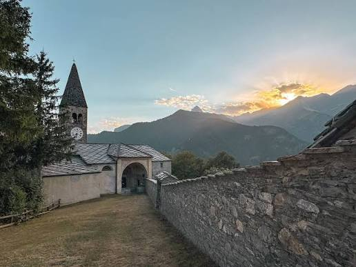
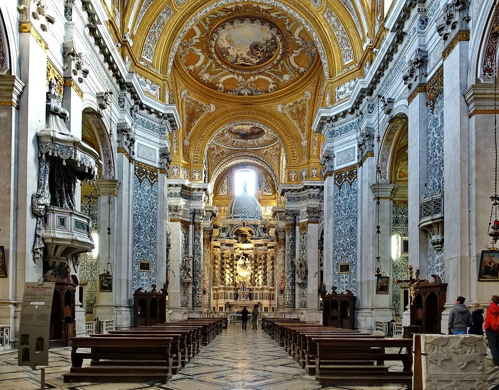
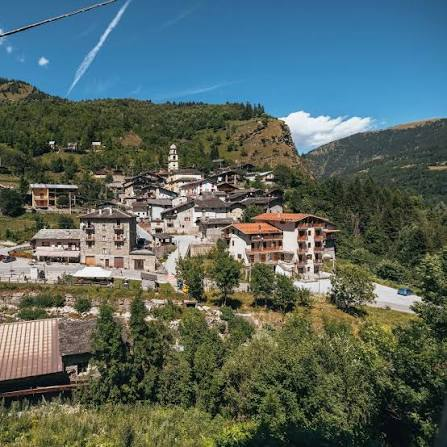
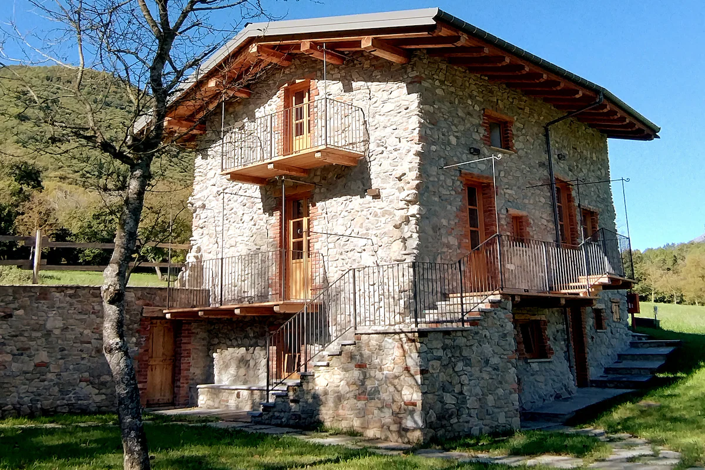
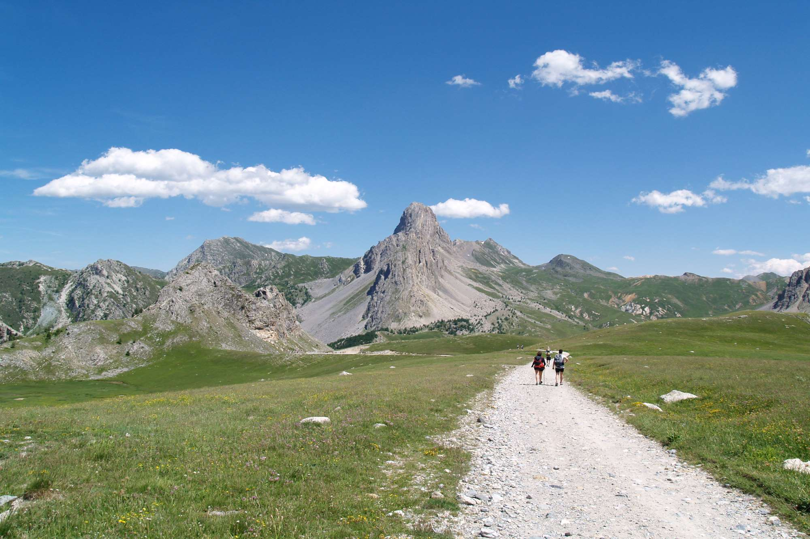
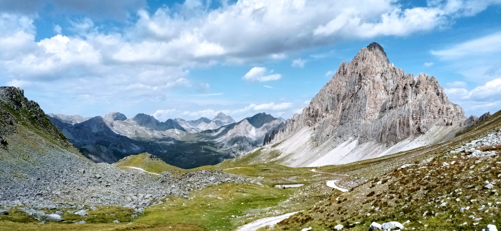

Cosa Vedere In Valle Maira
La Valle Maira offre numerosi luoghi da visitare, tra borghi, monumenti storici e spettacolari paesaggi naturali.

Castello di Elva
Il Castello di Elva domina uno dei borghi più belli della valle. Nei dintorni si trovano antiche case in pietra e splendidi panorami sulle montagne. Il paese conserva ancora l'atmosfera tipica dei villaggi alpini.

Parrocchiale di Santa Maria Assunta
È famosa soprattutto per gli splendidi affreschi realizzati dal pittore Hans Clemer nel XVI secolo. Gli affreschi rappresentano scene religiose ricche di dettagli. È considerata uno dei monumenti artistici più importanti della valle.

Acceglio
È uno degli ultimi comuni della valle. Da qui partono numerosi sentieri verso laghi alpini, rifugi e passi montani. Durante l'estate è molto frequentato dagli escursionisti.
Ideale per:
- Escursioni
- Laghi alpini
- Rifugi
- Passi montani

Marmora
Piccolo borgo immerso nella natura, ideale per passeggiate, relax e fotografia. Le abitazioni conservano l'architettura tradizionale alpina e contribuiscono a mantenere il carattere autentico del paese.

Passo della Gardetta
È uno dei luoghi più spettacolari della Valle Maira. È caratterizzato da un altopiano alpino, prati, rocce e panorami mozzafiato. È molto amato dagli escursionisti e dai ciclisti.
Caratteristiche:
- Altopiano alpino
- Prati e rocce
- Panorami panoramici
- Sentieri per escursionisti

Rocca La Meja
La Rocca La Meja è una delle montagne simbolo della Valle Maira. Con i suoi 2831 metri di altezza, è una delle cime più fotografate delle Alpi Cozie.
Attività:
- Trekking
- Arrampicata
- Fotografia naturalistica